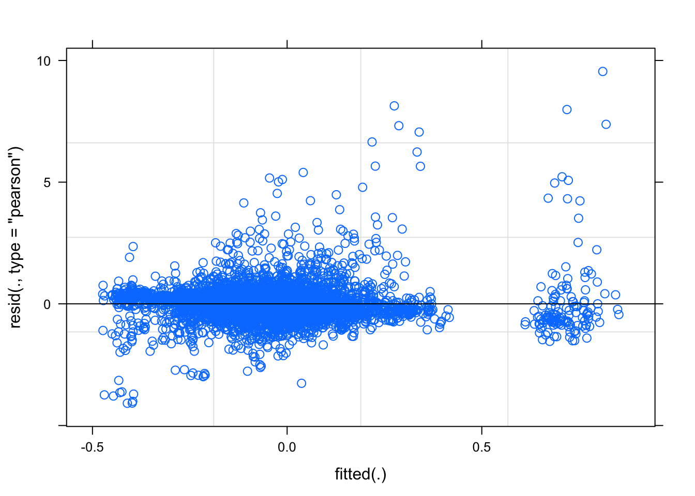
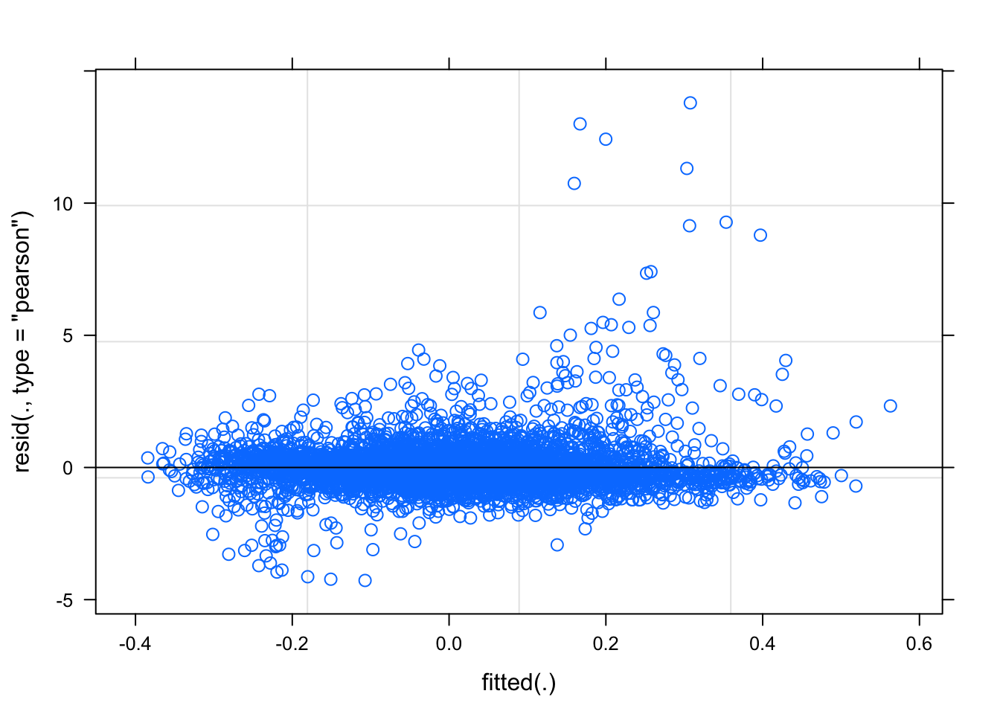
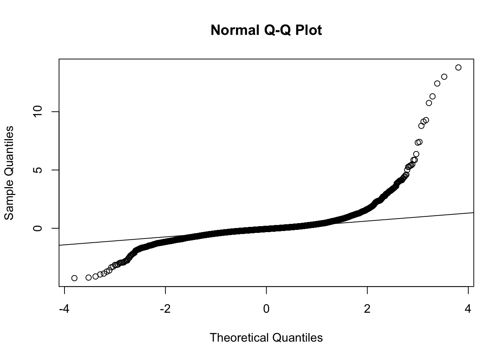
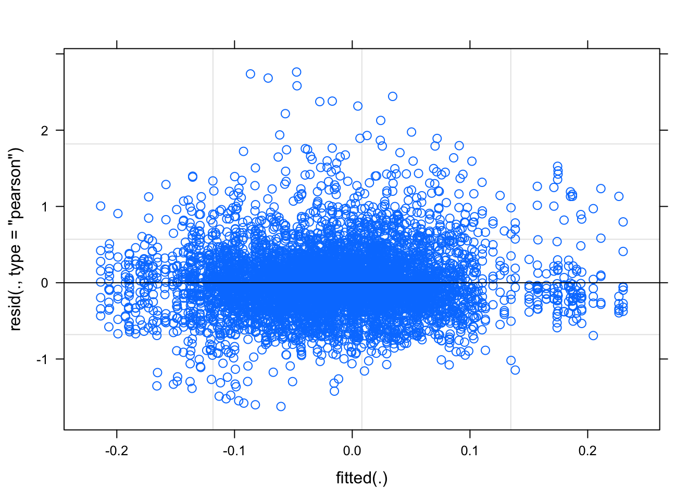

all_emo_adult_analysis
Wed/16/Sep
Last updated: 2020-09-16
Checks: 6 1
Knit directory: RILEY_Hons/
This reproducible R Markdown analysis was created with workflowr (version 1.6.2). The Checks tab describes the reproducibility checks that were applied when the results were created. The Past versions tab lists the development history.
The R Markdown file has staged changes. To know which version of the R Markdown file created these results, you’ll want to first commit it to the Git repo. If you’re still working on the analysis, you can ignore this warning. When you’re finished, you can run wflow_publish to commit the R Markdown file and build the HTML.
Great job! The global environment was empty. Objects defined in the global environment can affect the analysis in your R Markdown file in unknown ways. For reproduciblity it’s best to always run the code in an empty environment.
The command set.seed(20200903) was run prior to running the code in the R Markdown file. Setting a seed ensures that any results that rely on randomness, e.g. subsampling or permutations, are reproducible.
Great job! Recording the operating system, R version, and package versions is critical for reproducibility.
Nice! There were no cached chunks for this analysis, so you can be confident that you successfully produced the results during this run.
Great job! Using relative paths to the files within your workflowr project makes it easier to run your code on other machines.
Great! You are using Git for version control. Tracking code development and connecting the code version to the results is critical for reproducibility.
The results in this page were generated with repository version 6a11da0. See the Past versions tab to see a history of the changes made to the R Markdown and HTML files.
Note that you need to be careful to ensure that all relevant files for the analysis have been committed to Git prior to generating the results (you can use wflow_publish or wflow_git_commit). workflowr only checks the R Markdown file, but you know if there are other scripts or data files that it depends on. Below is the status of the Git repository when the results were generated:
Ignored files:
Ignored: .Rhistory
Ignored: .Rproj.user/
Ignored: analysis/child_bar_plot.png
Ignored: analysis/child_cheek_plot.png
Ignored: analysis/child_cheekbin_plot.png
Untracked files:
Untracked: analysis/test_zscore.Rmd
Unstaged changes:
Modified: analysis/5_calculating_zscores.Rmd
Modified: analysis/6_bin_outliers.Rmd
Staged changes:
Modified: README2
Modified: analysis/10_brow_analysis.Rmd
Modified: analysis/13_adult_child_analysis.Rmd
Modified: analysis/9_cheek_analysis.Rmd
Modified: analysis/all_emo_adult_analysis.Rmd
Modified: analysis/all_emo_child_analysis.Rmd
Modified: analysis/all_emo_plotting.Rmd
Modified: analysis/index.Rmd
Note that any generated files, e.g. HTML, png, CSS, etc., are not included in this status report because it is ok for generated content to have uncommitted changes.
These are the previous versions of the repository in which changes were made to the R Markdown (analysis/all_emo_adult_analysis.Rmd) and HTML (docs/all_emo_adult_analysis.html) files. If you’ve configured a remote Git repository (see ?wflow_git_remote), click on the hyperlinks in the table below to view the files as they were in that past version.
| File | Version | Author | Date | Message |
|---|---|---|---|---|
| Rmd | 75150a3 | RileyFerguson | 2020-09-14 | riley updating |
| html | 75150a3 | RileyFerguson | 2020-09-14 | riley updating |
#load packages
library(tidyverse)── Attaching packages ─────────────────────────────────────────────────────────── tidyverse 1.3.0 ──✓ ggplot2 3.2.1 ✓ purrr 0.3.4
✓ tibble 3.0.3 ✓ dplyr 1.0.0
✓ tidyr 1.1.0 ✓ stringr 1.4.0
✓ readr 1.3.1 ✓ forcats 0.4.0── Conflicts ────────────────────────────────────────────────────────────── tidyverse_conflicts() ──
x dplyr::filter() masks stats::filter()
x dplyr::lag() masks stats::lag()library(here)here() starts at /Users/rileyferguson/Desktop/RILEY_Honslibrary(lme4)Loading required package: Matrix
Attaching package: 'Matrix'The following objects are masked from 'package:tidyr':
expand, pack, unpacklibrary(lmerTest)
Attaching package: 'lmerTest'The following object is masked from 'package:lme4':
lmerThe following object is masked from 'package:stats':
steplibrary(broom.mixed)Registered S3 method overwritten by 'broom.mixed':
method from
tidy.gamlss broomlibrary(pixiedust)Additional documentation is being constructed at https://suchanutter.net/pixiedust/index.htmllibrary(beepr)
library(ggplot2)#read in data frame
df <- read_csv(here::here("data", "adult_child_combined", "zdiff_binscreened2.csv"))Parsed with column specification:
cols(
pp_no = col_character(),
model = col_character(),
emotion = col_double(),
trial = col_character(),
muscle = col_character(),
bin = col_character(),
zdiff = col_double(),
emo = col_character()
)glimpse(df)Rows: 61,480
Columns: 8
$ pp_no <chr> "pp401", "pp401", "pp401", "pp401", "pp401", "pp401", "pp401"…
$ model <chr> "adult", "adult", "adult", "adult", "adult", "adult", "adult"…
$ emotion <dbl> 131, 131, 131, 131, 131, 131, 131, 131, 131, 131, 131, 131, 1…
$ trial <chr> "trial1", "trial1", "trial1", "trial1", "trial1", "trial1", "…
$ muscle <chr> "brow", "brow", "brow", "brow", "brow", "brow", "brow", "brow…
$ bin <chr> "diff_bin1", "diff_bin10", "diff_bin2", "diff_bin3", "diff_bi…
$ zdiff <dbl> 0.133992486, -0.672344142, 0.034300886, -0.126145600, -0.1985…
$ emo <chr> "happy", "happy", "happy", "happy", "happy", "happy", "happy"…df$emotion <- as.factor(df$emotion)
levels(df$emotion)[1] "121" "131" "232" "323" "424" "434" "525" "535"df <- df %>% mutate_if(is.character, as.factor)
glimpse(df)Rows: 61,480
Columns: 8
$ pp_no <fct> pp401, pp401, pp401, pp401, pp401, pp401, pp401, pp401, pp401…
$ model <fct> adult, adult, adult, adult, adult, adult, adult, adult, adult…
$ emotion <fct> 131, 131, 131, 131, 131, 131, 131, 131, 131, 131, 131, 131, 1…
$ trial <fct> trial1, trial1, trial1, trial1, trial1, trial1, trial1, trial…
$ muscle <fct> brow, brow, brow, brow, brow, brow, brow, brow, brow, brow, c…
$ bin <fct> diff_bin1, diff_bin10, diff_bin2, diff_bin3, diff_bin4, diff_…
$ zdiff <dbl> 0.133992486, -0.672344142, 0.034300886, -0.126145600, -0.1985…
$ emo <fct> happy, happy, happy, happy, happy, happy, happy, happy, happy…#adult happy
adult_happy <- df %>%
filter(emo == "happy") %>%
filter(model == "adult") %>%
arrange(pp_no, muscle, emo, trial, bin)
glimpse(adult_happy)Rows: 7,800
Columns: 8
$ pp_no <fct> pp401, pp401, pp401, pp401, pp401, pp401, pp401, pp401, pp401…
$ model <fct> adult, adult, adult, adult, adult, adult, adult, adult, adult…
$ emotion <fct> 131, 131, 131, 131, 131, 131, 131, 131, 131, 131, 131, 131, 1…
$ trial <fct> trial1, trial1, trial1, trial1, trial1, trial1, trial1, trial…
$ muscle <fct> brow, brow, brow, brow, brow, brow, brow, brow, brow, brow, b…
$ bin <fct> diff_bin1, diff_bin10, diff_bin2, diff_bin3, diff_bin4, diff_…
$ zdiff <dbl> 0.13399249, -0.67234414, 0.03430089, -0.12614560, -0.19859639…
$ emo <fct> happy, happy, happy, happy, happy, happy, happy, happy, happy…adult_happy$emo <- fct_relevel(adult_happy$emo, "happy")
levels(adult_happy$emo)[1] "happy" "angry" "fear" "sad" adult_happy$bin <- fct_relevel(adult_happy$bin, c("diff_bin1", "diff_bin2", "diff_bin3", "diff_bin4", "diff_bin5", "diff_bin6", "diff_bin7", "diff_bin8", "diff_bin9", "diff_bin10"))
levels(adult_happy$bin) [1] "diff_bin1" "diff_bin2" "diff_bin3" "diff_bin4" "diff_bin5"
[6] "diff_bin6" "diff_bin7" "diff_bin8" "diff_bin9" "diff_bin10"Model 1 (intercepts only)
This model predicts Zdiff from fixed effects of emotion (happy, angry), bin (1-10), and emotion x bin interaction. It includes random intercepts for participant (accounting for the potential of some kids to just have more active faces than others) and random intercepts for trials (accounting for the possibiity that face activation differs across the the 10 trials). No slopes are included.
adult_happy_lm <- lmer(zdiff ~ muscle + bin + muscle*bin + (1|pp_no) + (1|trial), data = adult_happy, REML = FALSE)check assumptions - plot residuals and qqplot (check normality)
plot(adult_happy_lm)
| Version | Author | Date |
|---|---|---|
| 75150a3 | RileyFerguson | 2020-09-14 |
qqnorm(resid(adult_happy_lm))
qqline(resid(adult_happy_lm))
| Version | Author | Date |
|---|---|---|
| 75150a3 | RileyFerguson | 2020-09-14 |
As suscepted, need to transform to correct normality.
compute log_modulus
log modulus - transforms the absolute value (without the -) and then puts the sign back on. Make a new column for log modulus.
adult_happy <- adult_happy %>%
mutate(log_modulus = sign(zdiff) + log(1+abs(zdiff)))fit model again
adult_happy_lm_new <- lmer(log_modulus ~ muscle + bin + muscle*bin + (1|pp_no), data = adult_happy, REML = FALSE)check assumptions again
plot(adult_happy_lm_new)
| Version | Author | Date |
|---|---|---|
| 75150a3 | RileyFerguson | 2020-09-14 |
qqnorm(resid(adult_happy_lm_new))
qqline(resid(adult_happy_lm_new))
| Version | Author | Date |
|---|---|---|
| 75150a3 | RileyFerguson | 2020-09-14 |
#this one looks much worse…
compute new log mod
adult_happy <- adult_happy %>%
mutate(log_modulus_new = sign(zdiff) * log(1+abs(zdiff)))try fit model again
adult_happy_lm_1 <- lmer(log_modulus_new ~ muscle + bin + muscle*bin + (1|pp_no), data = adult_happy, REML = FALSE)check assumptions again
plot(adult_happy_lm_1)
| Version | Author | Date |
|---|---|---|
| 75150a3 | RileyFerguson | 2020-09-14 |
qqnorm(resid(adult_happy_lm_1))
qqline(resid(adult_happy_lm_1))
| Version | Author | Date |
|---|---|---|
| 75150a3 | RileyFerguson | 2020-09-14 |
#this one looks better but not great.
#use ANOVA to estimate effects
aov_output <- anova(adult_happy_lm_1) %>%
rownames_to_column() %>%
rename(term = rowname)#use summary to get coefficients
summary(adult_happy_lm_1)Linear mixed model fit by maximum likelihood . t-tests use Satterthwaite's
method [lmerModLmerTest]
Formula: log_modulus_new ~ muscle + bin + muscle * bin + (1 | pp_no)
Data: adult_happy
AIC BIC logLik deviance df.resid
7068.1 7218.8 -3512.1 7024.1 6947
Scaled residuals:
Min 1Q Median 3Q Max
-3.8873 -0.5148 -0.0621 0.4156 6.9013
Random effects:
Groups Name Variance Std.Dev.
pp_no (Intercept) 0.01015 0.1007
Residual 0.15780 0.3972
Number of obs: 6969, groups: pp_no, 50
Fixed effects:
Estimate Std. Error df t value Pr(>|t|)
(Intercept) -5.907e-03 2.555e-02 4.065e+02 -0.231 0.81728
musclecheek -1.781e-02 3.037e-02 6.920e+03 -0.587 0.55756
bindiff_bin2 -2.773e-02 2.993e-02 6.919e+03 -0.927 0.35414
bindiff_bin3 -2.184e-02 2.990e-02 6.919e+03 -0.730 0.46513
bindiff_bin4 -5.515e-03 2.980e-02 6.919e+03 -0.185 0.85318
bindiff_bin5 -3.639e-03 2.997e-02 6.919e+03 -0.121 0.90336
bindiff_bin6 -1.985e-02 2.984e-02 6.919e+03 -0.665 0.50596
bindiff_bin7 -1.723e-02 2.997e-02 6.919e+03 -0.575 0.56541
bindiff_bin8 -2.272e-02 2.995e-02 6.919e+03 -0.759 0.44811
bindiff_bin9 -1.953e-02 2.990e-02 6.919e+03 -0.653 0.51370
bindiff_bin10 -3.646e-02 2.993e-02 6.919e+03 -1.218 0.22310
musclecheek:bindiff_bin2 -3.439e-03 4.265e-02 6.919e+03 -0.081 0.93574
musclecheek:bindiff_bin3 -7.422e-03 4.267e-02 6.919e+03 -0.174 0.86191
musclecheek:bindiff_bin4 2.419e-02 4.261e-02 6.919e+03 0.568 0.57027
musclecheek:bindiff_bin5 2.379e-02 4.277e-02 6.919e+03 0.556 0.57806
musclecheek:bindiff_bin6 5.658e-02 4.268e-02 6.919e+03 1.326 0.18500
musclecheek:bindiff_bin7 7.719e-02 4.268e-02 6.919e+03 1.809 0.07055 .
musclecheek:bindiff_bin8 9.932e-02 4.282e-02 6.919e+03 2.320 0.02039 *
musclecheek:bindiff_bin9 1.215e-01 4.281e-02 6.919e+03 2.838 0.00456 **
musclecheek:bindiff_bin10 1.257e-01 4.299e-02 6.919e+03 2.923 0.00348 **
---
Signif. codes: 0 '***' 0.001 '**' 0.01 '*' 0.05 '.' 0.1 ' ' 1
Correlation matrix not shown by default, as p = 20 > 12.
Use print(x, correlation=TRUE) or
vcov(x) if you need ittidy_adult_happy1 <- tidy(adult_happy_lm_1)fit model 2 (slope for emotion)
adult_happy_lm_2 <- lmer(log_modulus_new ~ muscle + bin + muscle*bin + (1 + muscle|pp_no), data = adult_happy, REML = FALSE)#get summary, anova and tidy
summary(adult_happy_lm_2)Linear mixed model fit by maximum likelihood . t-tests use Satterthwaite's
method [lmerModLmerTest]
Formula: log_modulus_new ~ muscle + bin + muscle * bin + (1 + muscle |
pp_no)
Data: adult_happy
AIC BIC logLik deviance df.resid
6945.1 7109.5 -3448.6 6897.1 6945
Scaled residuals:
Min 1Q Median 3Q Max
-3.7306 -0.5208 -0.0471 0.4203 6.5551
Random effects:
Groups Name Variance Std.Dev. Corr
pp_no (Intercept) 0.01251 0.1119
musclecheek 0.01899 0.1378 -0.46
Residual 0.15310 0.3913
Number of obs: 6969, groups: pp_no, 50
Fixed effects:
Estimate Std. Error df t value Pr(>|t|)
(Intercept) -6.974e-03 2.620e-02 2.684e+02 -0.266 0.79033
musclecheek -1.677e-02 3.571e-02 3.610e+02 -0.470 0.63894
bindiff_bin2 -2.778e-02 2.948e-02 6.870e+03 -0.942 0.34608
bindiff_bin3 -2.096e-02 2.946e-02 6.870e+03 -0.711 0.47685
bindiff_bin4 -4.512e-03 2.936e-02 6.870e+03 -0.154 0.87786
bindiff_bin5 -3.460e-03 2.952e-02 6.870e+03 -0.117 0.90669
bindiff_bin6 -1.913e-02 2.940e-02 6.870e+03 -0.651 0.51529
bindiff_bin7 -1.744e-02 2.952e-02 6.870e+03 -0.591 0.55472
bindiff_bin8 -2.172e-02 2.950e-02 6.870e+03 -0.736 0.46155
bindiff_bin9 -1.869e-02 2.946e-02 6.870e+03 -0.634 0.52584
bindiff_bin10 -3.670e-02 2.948e-02 6.870e+03 -1.245 0.21322
musclecheek:bindiff_bin2 -3.803e-03 4.201e-02 6.870e+03 -0.091 0.92789
musclecheek:bindiff_bin3 -8.980e-03 4.203e-02 6.870e+03 -0.214 0.83082
musclecheek:bindiff_bin4 2.196e-02 4.198e-02 6.870e+03 0.523 0.60094
musclecheek:bindiff_bin5 2.307e-02 4.213e-02 6.870e+03 0.548 0.58401
musclecheek:bindiff_bin6 5.472e-02 4.205e-02 6.870e+03 1.301 0.19319
musclecheek:bindiff_bin7 7.762e-02 4.204e-02 6.870e+03 1.846 0.06493 .
musclecheek:bindiff_bin8 9.992e-02 4.218e-02 6.870e+03 2.369 0.01788 *
musclecheek:bindiff_bin9 1.209e-01 4.217e-02 6.870e+03 2.867 0.00416 **
musclecheek:bindiff_bin10 1.275e-01 4.235e-02 6.870e+03 3.010 0.00263 **
---
Signif. codes: 0 '***' 0.001 '**' 0.01 '*' 0.05 '.' 0.1 ' ' 1
Correlation matrix not shown by default, as p = 20 > 12.
Use print(x, correlation=TRUE) or
vcov(x) if you need itanova(adult_happy_lm_2)Type III Analysis of Variance Table with Satterthwaite's method
Sum Sq Mean Sq NumDF DenDF F value Pr(>F)
muscle 0.3897 0.38968 1 49.7 2.5454 0.116961
bin 3.2753 0.36392 9 6869.5 2.3771 0.011099 *
muscle:bin 4.2741 0.47489 9 6869.6 3.1019 0.001001 **
---
Signif. codes: 0 '***' 0.001 '**' 0.01 '*' 0.05 '.' 0.1 ' ' 1tidy_adult_happy2 <- tidy(adult_happy_lm_2)#check fit
AIC(adult_happy_lm_1)[1] 7068.123AIC(adult_happy_lm_2)[1] 6945.125anova(adult_happy_lm_1, adult_happy_lm_2)Data: adult_happy
Models:
adult_happy_lm_1: log_modulus_new ~ muscle + bin + muscle * bin + (1 | pp_no)
adult_happy_lm_2: log_modulus_new ~ muscle + bin + muscle * bin + (1 + muscle |
adult_happy_lm_2: pp_no)
npar AIC BIC logLik deviance Chisq Df Pr(>Chisq)
adult_happy_lm_1 22 7068.1 7218.8 -3512.1 7024.1
adult_happy_lm_2 24 6945.1 7109.5 -3448.6 6897.1 127 2 < 2.2e-16 ***
---
Signif. codes: 0 '***' 0.001 '**' 0.01 '*' 0.05 '.' 0.1 ' ' 1#model take home - model 2 with slope for emotion provides a better fit for the data
#fit model 3 (slope for emo and bin) - model failed to converge
adult_happy_lm_3 <- lmer(log_modulus_new ~ muscle + bin + muscle*bin + (1 + muscle + bin|pp_no), data = adult_happy, REML = FALSE)boundary (singular) fit: see ?isSingularWarning: Model failed to converge with 2 negative eigenvalues: -1.3e+00 -1.8e+01#take home - model 2 provides the best fit for the data
#get confidence intervals
confint.merMod(adult_happy_lm_2, level = 0.95)Computing profile confidence intervals ... 2.5 % 97.5 %
.sig01 0.08932339 0.14220380
.sig02 -0.67853270 -0.16793818
.sig03 0.10846569 0.17669799
.sigma 0.38482186 0.39791019
(Intercept) -0.05852466 0.04457532
musclecheek -0.08694332 0.05341968
bindiff_bin2 -0.08556741 0.03000955
bindiff_bin3 -0.07870291 0.03678829
bindiff_bin4 -0.06205638 0.05303288
bindiff_bin5 -0.06132774 0.05440696
bindiff_bin6 -0.07674909 0.03849562
bindiff_bin7 -0.07530721 0.04042952
bindiff_bin8 -0.07955039 0.03610586
bindiff_bin9 -0.07643543 0.03905751
bindiff_bin10 -0.09448296 0.02108817
musclecheek:bindiff_bin2 -0.08616173 0.07855651
musclecheek:bindiff_bin3 -0.09137089 0.07341045
musclecheek:bindiff_bin4 -0.06032643 0.10423960
musclecheek:bindiff_bin5 -0.05952289 0.10566560
musclecheek:bindiff_bin6 -0.02770650 0.13714527
musclecheek:bindiff_bin7 -0.00480128 0.16003240
musclecheek:bindiff_bin8 0.01723295 0.18261538
musclecheek:bindiff_bin9 0.03823101 0.20356836
musclecheek:bindiff_bin10 0.04444111 0.21047214really_nice_table <- dust(adult_happy_lm_2) %>%
sprinkle(col = 4:7, round = 3, pad = 15, halign = "center", valign = "middle") %>%
sprinkle(col = 8, fn = quote(pvalString(value)), halign = "center", valign = "middle") %>%
sprinkle_colnames(term = "Term",
estimate = "Estimate",
std.error = "SE",
statistic = "t statistic",
p.value = "P-value") %>%
sprinkle(bg_pattern_by = "rows") %>%
sprinkle_print_method("html")
really_nice_table| effect | group | Term | Estimate | SE | t statistic | df | P-value |
|---|---|---|---|---|---|---|---|
| fixed | NA | (Intercept) | -0.007 | 0.026 | -0.266 | 268.41 | 0.79 |
| fixed | NA | musclecheek | -0.017 | 0.036 | -0.47 | 360.951 | 0.64 |
| fixed | NA | bindiff_bin2 | -0.028 | 0.029 | -0.942 | 6870.005 | 0.35 |
| fixed | NA | bindiff_bin3 | -0.021 | 0.029 | -0.711 | 6869.771 | 0.48 |
| fixed | NA | bindiff_bin4 | -0.005 | 0.029 | -0.154 | 6869.652 | 0.88 |
| fixed | NA | bindiff_bin5 | -0.003 | 0.03 | -0.117 | 6869.738 | 0.91 |
| fixed | NA | bindiff_bin6 | -0.019 | 0.029 | -0.651 | 6869.503 | 0.52 |
| fixed | NA | bindiff_bin7 | -0.017 | 0.03 | -0.591 | 6869.84 | 0.55 |
| fixed | NA | bindiff_bin8 | -0.022 | 0.03 | -0.736 | 6869.909 | 0.46 |
| fixed | NA | bindiff_bin9 | -0.019 | 0.029 | -0.634 | 6869.858 | 0.53 |
| fixed | NA | bindiff_bin10 | -0.037 | 0.029 | -1.245 | 6869.732 | 0.21 |
| fixed | NA | musclecheek:bindiff_bin2 | -0.004 | 0.042 | -0.091 | 6869.737 | 0.93 |
| fixed | NA | musclecheek:bindiff_bin3 | -0.009 | 0.042 | -0.214 | 6869.765 | 0.83 |
| fixed | NA | musclecheek:bindiff_bin4 | 0.022 | 0.042 | 0.523 | 6870.014 | 0.6 |
| fixed | NA | musclecheek:bindiff_bin5 | 0.023 | 0.042 | 0.548 | 6869.752 | 0.58 |
| fixed | NA | musclecheek:bindiff_bin6 | 0.055 | 0.042 | 1.301 | 6869.845 | 0.19 |
| fixed | NA | musclecheek:bindiff_bin7 | 0.078 | 0.042 | 1.846 | 6869.808 | 0.065 |
| fixed | NA | musclecheek:bindiff_bin8 | 0.1 | 0.042 | 2.369 | 6870.024 | 0.018 |
| fixed | NA | musclecheek:bindiff_bin9 | 0.121 | 0.042 | 2.867 | 6870.151 | 0.004 |
| fixed | NA | musclecheek:bindiff_bin10 | 0.127 | 0.042 | 3.01 | 6870.142 | 0.003 |
| ran_pars | pp_no | sd__(Intercept) | 0.112 | NA | NA | NA | NA |
| ran_pars | pp_no | cor__(Intercept).musclecheek | -0.462 | NA | NA | NA | NA |
| ran_pars | pp_no | sd__musclecheek | 0.138 | NA | NA | NA | NA |
| ran_pars | Residual | sd__Observation | 0.391 | NA | NA | NA | NA |
#adult angry
adult_angry <- df %>%
filter(emo == "angry") %>%
filter(model == "adult") %>%
arrange(pp_no, muscle, emo, trial, bin)
glimpse(adult_angry)Rows: 7,740
Columns: 8
$ pp_no <fct> pp401, pp401, pp401, pp401, pp401, pp401, pp401, pp401, pp401…
$ model <fct> adult, adult, adult, adult, adult, adult, adult, adult, adult…
$ emotion <fct> 232, 232, 232, 232, 232, 232, 232, 232, 232, 232, 232, 232, 2…
$ trial <fct> trial1, trial1, trial1, trial1, trial1, trial1, trial1, trial…
$ muscle <fct> brow, brow, brow, brow, brow, brow, brow, brow, brow, brow, b…
$ bin <fct> diff_bin1, diff_bin10, diff_bin2, diff_bin3, diff_bin4, diff_…
$ zdiff <dbl> 0.36199875, 0.10381706, -0.33369467, 0.59538512, 0.57743723, …
$ emo <fct> angry, angry, angry, angry, angry, angry, angry, angry, angry…adult_angry$emo <- fct_relevel(adult_angry$emo, "happy")
levels(adult_angry$emo)[1] "happy" "angry" "fear" "sad" adult_angry$bin <- fct_relevel(adult_angry$bin, c("diff_bin1", "diff_bin2", "diff_bin3", "diff_bin4", "diff_bin5", "diff_bin6", "diff_bin7", "diff_bin8", "diff_bin9", "diff_bin10"))
levels(adult_angry$bin) [1] "diff_bin1" "diff_bin2" "diff_bin3" "diff_bin4" "diff_bin5"
[6] "diff_bin6" "diff_bin7" "diff_bin8" "diff_bin9" "diff_bin10"Model 1 (intercepts only)
This model predicts Zdiff from fixed effects of emotion (happy, angry), bin (1-10), and emotion x bin interaction. It includes random intercepts for participant (accounting for the potential of some kids to just have more active faces than others) and random intercepts for trials (accounting for the possibiity that face activation differs across the the 10 trials). No slopes are included.
adult_angry_lm <- lmer(zdiff ~ muscle + bin + muscle*bin + (1|pp_no) + (1|trial), data = adult_angry, REML = FALSE)check assumptions - plot residuals and qqplot (check normality)
plot(adult_angry_lm)
| Version | Author | Date |
|---|---|---|
| 75150a3 | RileyFerguson | 2020-09-14 |
qqnorm(resid(adult_angry_lm))
qqline(resid(adult_angry_lm))
| Version | Author | Date |
|---|---|---|
| 75150a3 | RileyFerguson | 2020-09-14 |
As suscepted, need to transform to correct normality.
compute log_modulus
log modulus - transforms the absolute value (without the -) and then puts the sign back on. Make a new column for log modulus.
adult_angry <- adult_angry %>%
mutate(log_modulus = sign(zdiff) + log(1+abs(zdiff)))fit model again
adult_angry_lm_new <- lmer(log_modulus ~ muscle + bin + muscle*bin + (1|pp_no), data = adult_angry, REML = FALSE)check assumptions again
plot(adult_angry_lm_new)
| Version | Author | Date |
|---|---|---|
| 75150a3 | RileyFerguson | 2020-09-14 |
qqnorm(resid(adult_angry_lm_new))
qqline(resid(adult_angry_lm_new))
| Version | Author | Date |
|---|---|---|
| 75150a3 | RileyFerguson | 2020-09-14 |
#this one looks much worse…
compute new log mod
adult_angry <- adult_angry %>%
mutate(log_modulus_new = sign(zdiff) * log(1+abs(zdiff)))try fit model again
adult_angry_lm_1 <- lmer(log_modulus_new ~ muscle + bin + muscle*bin + (1|pp_no), data = adult_angry, REML = FALSE)check assumptions again
plot(adult_angry_lm_1)
| Version | Author | Date |
|---|---|---|
| 75150a3 | RileyFerguson | 2020-09-14 |
qqnorm(resid(adult_angry_lm_1))
qqline(resid(adult_angry_lm_1))
| Version | Author | Date |
|---|---|---|
| 75150a3 | RileyFerguson | 2020-09-14 |
#this one looks better but not great.
#use ANOVA to estimate effects
aov_output <- anova(adult_angry_lm_1) %>%
rownames_to_column() %>%
rename(term = rowname)#use summary to get coefficients
summary(adult_angry_lm_1)Linear mixed model fit by maximum likelihood . t-tests use Satterthwaite's
method [lmerModLmerTest]
Formula: log_modulus_new ~ muscle + bin + muscle * bin + (1 | pp_no)
Data: adult_angry
AIC BIC logLik deviance df.resid
6100.3 6250.9 -3028.1 6056.3 6918
Scaled residuals:
Min 1Q Median 3Q Max
-4.0428 -0.4947 -0.0364 0.4210 5.7671
Random effects:
Groups Name Variance Std.Dev.
pp_no (Intercept) 0.008315 0.09119
Residual 0.137886 0.37133
Number of obs: 6940, groups: pp_no, 50
Fixed effects:
Estimate Std. Error df t value Pr(>|t|)
(Intercept) -4.965e-02 2.374e-02 4.450e+02 -2.091 0.0371 *
musclecheek 3.264e-02 2.849e-02 6.891e+03 1.146 0.2520
bindiff_bin2 3.226e-02 2.817e-02 6.891e+03 1.145 0.2523
bindiff_bin3 1.409e-02 2.807e-02 6.890e+03 0.502 0.6158
bindiff_bin4 -1.605e-02 2.796e-02 6.890e+03 -0.574 0.5658
bindiff_bin5 1.217e-03 2.801e-02 6.890e+03 0.043 0.9654
bindiff_bin6 1.297e-02 2.800e-02 6.890e+03 0.463 0.6432
bindiff_bin7 2.023e-02 2.796e-02 6.890e+03 0.724 0.4692
bindiff_bin8 1.741e-02 2.807e-02 6.890e+03 0.620 0.5351
bindiff_bin9 1.627e-02 2.814e-02 6.891e+03 0.578 0.5631
bindiff_bin10 -9.373e-03 2.807e-02 6.890e+03 -0.334 0.7385
musclecheek:bindiff_bin2 -6.056e-02 4.020e-02 6.891e+03 -1.506 0.1320
musclecheek:bindiff_bin3 -3.577e-02 4.006e-02 6.890e+03 -0.893 0.3719
musclecheek:bindiff_bin4 -1.428e-02 3.991e-02 6.890e+03 -0.358 0.7205
musclecheek:bindiff_bin5 -2.084e-02 4.000e-02 6.890e+03 -0.521 0.6023
musclecheek:bindiff_bin6 -4.133e-02 4.000e-02 6.890e+03 -1.033 0.3016
musclecheek:bindiff_bin7 -1.402e-02 3.992e-02 6.890e+03 -0.351 0.7254
musclecheek:bindiff_bin8 -7.380e-03 4.018e-02 6.890e+03 -0.184 0.8543
musclecheek:bindiff_bin9 -1.736e-03 4.016e-02 6.890e+03 -0.043 0.9655
musclecheek:bindiff_bin10 -8.958e-03 4.016e-02 6.890e+03 -0.223 0.8235
---
Signif. codes: 0 '***' 0.001 '**' 0.01 '*' 0.05 '.' 0.1 ' ' 1
Correlation matrix not shown by default, as p = 20 > 12.
Use print(x, correlation=TRUE) or
vcov(x) if you need ittidy_adult_angry1 <- tidy(adult_angry_lm_1)fit model 2 (slope for emotion)
adult_angry_lm_2 <- lmer(log_modulus_new ~ muscle + bin + muscle*bin + (1 + muscle|pp_no), data = adult_angry, REML = FALSE)#get summary, anova and tidy
summary(adult_angry_lm_2)Linear mixed model fit by maximum likelihood . t-tests use Satterthwaite's
method [lmerModLmerTest]
Formula: log_modulus_new ~ muscle + bin + muscle * bin + (1 + muscle |
pp_no)
Data: adult_angry
AIC BIC logLik deviance df.resid
5865.6 6029.9 -2908.8 5817.6 6916
Scaled residuals:
Min 1Q Median 3Q Max
-4.1163 -0.4962 -0.0406 0.4276 6.0873
Random effects:
Groups Name Variance Std.Dev. Corr
pp_no (Intercept) 0.01986 0.1409
musclecheek 0.02628 0.1621 -0.79
Residual 0.13128 0.3623
Number of obs: 6940, groups: pp_no, 50
Fixed effects:
Estimate Std. Error df t value Pr(>|t|)
(Intercept) -4.950e-02 2.785e-02 1.579e+02 -1.777 0.0775 .
musclecheek 3.345e-02 3.604e-02 2.308e+02 0.928 0.3543
bindiff_bin2 3.290e-02 2.750e-02 6.841e+03 1.197 0.2315
bindiff_bin3 1.314e-02 2.740e-02 6.841e+03 0.480 0.6314
bindiff_bin4 -1.685e-02 2.728e-02 6.841e+03 -0.618 0.5369
bindiff_bin5 7.490e-04 2.734e-02 6.841e+03 0.027 0.9781
bindiff_bin6 1.247e-02 2.732e-02 6.841e+03 0.456 0.6482
bindiff_bin7 1.996e-02 2.728e-02 6.841e+03 0.732 0.4643
bindiff_bin8 1.694e-02 2.740e-02 6.841e+03 0.618 0.5363
bindiff_bin9 1.719e-02 2.746e-02 6.841e+03 0.626 0.5314
bindiff_bin10 -8.228e-03 2.740e-02 6.841e+03 -0.300 0.7639
musclecheek:bindiff_bin2 -6.129e-02 3.923e-02 6.841e+03 -1.562 0.1183
musclecheek:bindiff_bin3 -3.567e-02 3.909e-02 6.841e+03 -0.912 0.3616
musclecheek:bindiff_bin4 -1.354e-02 3.895e-02 6.841e+03 -0.348 0.7281
musclecheek:bindiff_bin5 -1.978e-02 3.903e-02 6.841e+03 -0.507 0.6123
musclecheek:bindiff_bin6 -4.097e-02 3.904e-02 6.841e+03 -1.050 0.2939
musclecheek:bindiff_bin7 -1.419e-02 3.895e-02 6.841e+03 -0.364 0.7157
musclecheek:bindiff_bin8 -5.662e-03 3.921e-02 6.841e+03 -0.144 0.8852
musclecheek:bindiff_bin9 -2.972e-03 3.919e-02 6.841e+03 -0.076 0.9396
musclecheek:bindiff_bin10 -1.041e-02 3.919e-02 6.841e+03 -0.266 0.7905
---
Signif. codes: 0 '***' 0.001 '**' 0.01 '*' 0.05 '.' 0.1 ' ' 1
Correlation matrix not shown by default, as p = 20 > 12.
Use print(x, correlation=TRUE) or
vcov(x) if you need itanova(adult_angry_lm_2)Type III Analysis of Variance Table with Satterthwaite's method
Sum Sq Mean Sq NumDF DenDF F value Pr(>F)
muscle 0.03688 0.036879 1 50.0 0.2809 0.5984
bin 1.04906 0.116562 9 6840.9 0.8879 0.5351
muscle:bin 0.59365 0.065962 9 6840.9 0.5024 0.8738tidy_adult_angry2 <- tidy(adult_angry_lm_2)#check fit
AIC(adult_angry_lm_1)[1] 6100.268AIC(adult_angry_lm_2)[1] 5865.619anova(adult_angry_lm_1, adult_angry_lm_2)Data: adult_angry
Models:
adult_angry_lm_1: log_modulus_new ~ muscle + bin + muscle * bin + (1 | pp_no)
adult_angry_lm_2: log_modulus_new ~ muscle + bin + muscle * bin + (1 + muscle |
adult_angry_lm_2: pp_no)
npar AIC BIC logLik deviance Chisq Df Pr(>Chisq)
adult_angry_lm_1 22 6100.3 6250.9 -3028.1 6056.3
adult_angry_lm_2 24 5865.6 6029.9 -2908.8 5817.6 238.65 2 < 2.2e-16 ***
---
Signif. codes: 0 '***' 0.001 '**' 0.01 '*' 0.05 '.' 0.1 ' ' 1#model take home - model 2 with slope for emotion provides a better fit for the data
#fit model 3 (slope for emo and bin) - model failed to converge
adult_angry_lm_3 <- lmer(log_modulus_new ~ muscle + bin + muscle*bin + (1 + muscle + bin|pp_no), data = adult_angry, REML = FALSE)boundary (singular) fit: see ?isSingular#take home - model 2 provides the best fit for the data
#get confidence intervals
confint.merMod(adult_angry_lm_2, level = 0.95)Computing profile confidence intervals ... 2.5 % 97.5 %
.sig01 0.11467779 0.17663121
.sig02 -0.88203925 -0.63435076
.sig03 0.13044741 0.20479760
.sigma 0.35633981 0.36848507
(Intercept) -0.10442399 0.00544197
musclecheek -0.03748501 0.10438838
bindiff_bin2 -0.02099652 0.08680257
bindiff_bin3 -0.04056295 0.06684987
bindiff_bin4 -0.07032737 0.03662931
bindiff_bin5 -0.05283821 0.05433614
bindiff_bin6 -0.04108728 0.06602154
bindiff_bin7 -0.03351424 0.07344262
bindiff_bin8 -0.03675866 0.07064426
bindiff_bin9 -0.03663973 0.07101153
bindiff_bin10 -0.06192994 0.04547298
musclecheek:bindiff_bin2 -0.13819782 0.01561216
musclecheek:bindiff_bin3 -0.11228915 0.04095707
musclecheek:bindiff_bin4 -0.08989504 0.06281172
musclecheek:bindiff_bin5 -0.09629496 0.05673076
musclecheek:bindiff_bin6 -0.11749302 0.03554421
musclecheek:bindiff_bin7 -0.09054140 0.06216591
musclecheek:bindiff_bin8 -0.08251737 0.07119277
musclecheek:bindiff_bin9 -0.07979487 0.07385139
musclecheek:bindiff_bin10 -0.08723221 0.06641100really_nice_table <- dust(adult_angry_lm_2) %>%
sprinkle(col = 4:7, round = 3, pad = 15, halign = "center", valign = "middle") %>%
sprinkle(col = 8, fn = quote(pvalString(value)), halign = "center", valign = "middle") %>%
sprinkle_colnames(term = "Term",
estimate = "Estimate",
std.error = "SE",
statistic = "t statistic",
p.value = "P-value") %>%
sprinkle(bg_pattern_by = "rows") %>%
sprinkle_print_method("html")
really_nice_table| effect | group | Term | Estimate | SE | t statistic | df | P-value |
|---|---|---|---|---|---|---|---|
| fixed | NA | (Intercept) | -0.049 | 0.028 | -1.777 | 157.886 | 0.077 |
| fixed | NA | musclecheek | 0.033 | 0.036 | 0.928 | 230.82 | 0.35 |
| fixed | NA | bindiff_bin2 | 0.033 | 0.027 | 1.197 | 6840.963 | 0.23 |
| fixed | NA | bindiff_bin3 | 0.013 | 0.027 | 0.48 | 6840.851 | 0.63 |
| fixed | NA | bindiff_bin4 | -0.017 | 0.027 | -0.618 | 6840.594 | 0.54 |
| fixed | NA | bindiff_bin5 | 0.001 | 0.027 | 0.027 | 6840.51 | 0.98 |
| fixed | NA | bindiff_bin6 | 0.012 | 0.027 | 0.456 | 6840.721 | 0.65 |
| fixed | NA | bindiff_bin7 | 0.02 | 0.027 | 0.732 | 6840.608 | 0.46 |
| fixed | NA | bindiff_bin8 | 0.017 | 0.027 | 0.618 | 6840.612 | 0.54 |
| fixed | NA | bindiff_bin9 | 0.017 | 0.027 | 0.626 | 6841.119 | 0.53 |
| fixed | NA | bindiff_bin10 | -0.008 | 0.027 | -0.3 | 6840.609 | 0.76 |
| fixed | NA | musclecheek:bindiff_bin2 | -0.061 | 0.039 | -1.562 | 6841.329 | 0.12 |
| fixed | NA | musclecheek:bindiff_bin3 | -0.036 | 0.039 | -0.912 | 6840.972 | 0.36 |
| fixed | NA | musclecheek:bindiff_bin4 | -0.014 | 0.039 | -0.348 | 6840.903 | 0.73 |
| fixed | NA | musclecheek:bindiff_bin5 | -0.02 | 0.039 | -0.507 | 6840.879 | 0.61 |
| fixed | NA | musclecheek:bindiff_bin6 | -0.041 | 0.039 | -1.05 | 6841.006 | 0.29 |
| fixed | NA | musclecheek:bindiff_bin7 | -0.014 | 0.039 | -0.364 | 6840.89 | 0.72 |
| fixed | NA | musclecheek:bindiff_bin8 | -0.006 | 0.039 | -0.144 | 6841.265 | 0.89 |
| fixed | NA | musclecheek:bindiff_bin9 | -0.003 | 0.039 | -0.076 | 6841.381 | 0.94 |
| fixed | NA | musclecheek:bindiff_bin10 | -0.01 | 0.039 | -0.266 | 6840.989 | 0.79 |
| ran_pars | pp_no | sd__(Intercept) | 0.141 | NA | NA | NA | NA |
| ran_pars | pp_no | cor__(Intercept).musclecheek | -0.788 | NA | NA | NA | NA |
| ran_pars | pp_no | sd__musclecheek | 0.162 | NA | NA | NA | NA |
| ran_pars | Residual | sd__Observation | 0.362 | NA | NA | NA | NA |
#adult fear
adult_fear <- df %>%
filter(emo == "fear") %>%
filter(model == "adult") %>%
arrange(pp_no, muscle, emo, trial, bin)
glimpse(adult_fear)Rows: 7,900
Columns: 8
$ pp_no <fct> pp401, pp401, pp401, pp401, pp401, pp401, pp401, pp401, pp401…
$ model <fct> adult, adult, adult, adult, adult, adult, adult, adult, adult…
$ emotion <fct> 434, 434, 434, 434, 434, 434, 434, 434, 434, 434, 434, 434, 4…
$ trial <fct> trial1, trial1, trial1, trial1, trial1, trial1, trial1, trial…
$ muscle <fct> brow, brow, brow, brow, brow, brow, brow, brow, brow, brow, b…
$ bin <fct> diff_bin1, diff_bin10, diff_bin2, diff_bin3, diff_bin4, diff_…
$ zdiff <dbl> -0.13063257, 0.24559264, -0.12114826, -0.04652842, -0.2122061…
$ emo <fct> fear, fear, fear, fear, fear, fear, fear, fear, fear, fear, f…adult_fear$emo <- fct_relevel(adult_fear$emo, "fear")
levels(adult_fear$emo)[1] "fear" "angry" "happy" "sad" adult_fear$bin <- fct_relevel(adult_fear$bin, c("diff_bin1", "diff_bin2", "diff_bin3", "diff_bin4", "diff_bin5", "diff_bin6", "diff_bin7", "diff_bin8", "diff_bin9", "diff_bin10"))
levels(adult_fear$bin) [1] "diff_bin1" "diff_bin2" "diff_bin3" "diff_bin4" "diff_bin5"
[6] "diff_bin6" "diff_bin7" "diff_bin8" "diff_bin9" "diff_bin10"Model 1 (intercepts only)
This model predicts Zdiff from fixed effects of emotion (happy, angry), bin (1-10), and emotion x bin interaction. It includes random intercepts for participant (accounting for the potential of some kids to just have more active faces than others) and random intercepts for trials (accounting for the possibiity that face activation differs across the the 10 trials). No slopes are included.
adult_fear_lm <- lmer(zdiff ~ muscle + bin + muscle*bin + (1|pp_no) + (1|trial), data = adult_fear, REML = FALSE)check assumptions - plot residuals and qqplot (check normality)
plot(adult_fear_lm)
| Version | Author | Date |
|---|---|---|
| 75150a3 | RileyFerguson | 2020-09-14 |
qqnorm(resid(adult_fear_lm))
qqline(resid(adult_fear_lm))
| Version | Author | Date |
|---|---|---|
| 75150a3 | RileyFerguson | 2020-09-14 |
As suscepted, need to transform to correct normality.
compute log_modulus
log modulus - transforms the absolute value (without the -) and then puts the sign back on. Make a new column for log modulus.
adult_fear <- adult_fear %>%
mutate(log_modulus = sign(zdiff) + log(1+abs(zdiff)))fit model again
adult_fear_lm_new <- lmer(log_modulus ~ muscle + bin + muscle*bin + (1|pp_no), data = adult_fear, REML = FALSE)check assumptions again
plot(adult_angry_lm_new)
| Version | Author | Date |
|---|---|---|
| 75150a3 | RileyFerguson | 2020-09-14 |
qqnorm(resid(adult_fear_lm_new))
qqline(resid(adult_fear_lm_new))
| Version | Author | Date |
|---|---|---|
| 75150a3 | RileyFerguson | 2020-09-14 |
#this one looks much worse…
compute new log mod
adult_fear <- adult_fear %>%
mutate(log_modulus_new = sign(zdiff) * log(1+abs(zdiff)))try fit model again
adult_fear_lm_1 <- lmer(log_modulus_new ~ muscle + bin + muscle*bin + (1|pp_no), data = adult_fear, REML = FALSE)check assumptions again
plot(adult_fear_lm_1)
| Version | Author | Date |
|---|---|---|
| 75150a3 | RileyFerguson | 2020-09-14 |
qqnorm(resid(adult_fear_lm_1))
qqline(resid(adult_fear_lm_1))
| Version | Author | Date |
|---|---|---|
| 75150a3 | RileyFerguson | 2020-09-14 |
#this one looks better but not great.
#use ANOVA to estimate effects
aov_output <- anova(adult_fear_lm_1) %>%
rownames_to_column() %>%
rename(term = rowname)#use summary to get coefficients
summary(adult_fear_lm_1)Linear mixed model fit by maximum likelihood . t-tests use Satterthwaite's
method [lmerModLmerTest]
Formula: log_modulus_new ~ muscle + bin + muscle * bin + (1 | pp_no)
Data: adult_fear
AIC BIC logLik deviance df.resid
7340.1 7490.9 -3648.1 7296.1 6993
Scaled residuals:
Min 1Q Median 3Q Max
-4.0102 -0.5261 -0.0825 0.4178 6.8267
Random effects:
Groups Name Variance Std.Dev.
pp_no (Intercept) 0.005089 0.07133
Residual 0.163692 0.40459
Number of obs: 7015, groups: pp_no, 50
Fixed effects:
Estimate Std. Error df t value Pr(>|t|)
(Intercept) -4.283e-02 2.384e-02 9.486e+02 -1.797 0.0727 .
musclecheek -7.527e-03 3.075e-02 6.967e+03 -0.245 0.8066
bindiff_bin2 3.641e-02 3.046e-02 6.966e+03 1.195 0.2320
bindiff_bin3 7.235e-02 3.035e-02 6.966e+03 2.384 0.0172 *
bindiff_bin4 2.763e-02 3.035e-02 6.966e+03 0.910 0.3627
bindiff_bin5 5.345e-02 3.042e-02 6.966e+03 1.757 0.0789 .
bindiff_bin6 2.931e-02 3.046e-02 6.966e+03 0.962 0.3359
bindiff_bin7 1.353e-02 3.027e-02 6.966e+03 0.447 0.6550
bindiff_bin8 -5.423e-04 3.042e-02 6.966e+03 -0.018 0.9858
bindiff_bin9 1.670e-02 3.042e-02 6.966e+03 0.549 0.5830
bindiff_bin10 1.707e-02 3.044e-02 6.966e+03 0.561 0.5749
musclecheek:bindiff_bin2 -2.173e-02 4.331e-02 6.966e+03 -0.502 0.6158
musclecheek:bindiff_bin3 -3.497e-02 4.328e-02 6.966e+03 -0.808 0.4191
musclecheek:bindiff_bin4 5.954e-03 4.331e-02 6.966e+03 0.137 0.8907
musclecheek:bindiff_bin5 -1.308e-02 4.328e-02 6.966e+03 -0.302 0.7625
musclecheek:bindiff_bin6 -5.520e-03 4.328e-02 6.966e+03 -0.128 0.8985
musclecheek:bindiff_bin7 3.118e-02 4.319e-02 6.966e+03 0.722 0.4704
musclecheek:bindiff_bin8 3.023e-02 4.339e-02 6.966e+03 0.697 0.4859
musclecheek:bindiff_bin9 5.958e-02 4.333e-02 6.966e+03 1.375 0.1691
musclecheek:bindiff_bin10 3.747e-02 4.368e-02 6.967e+03 0.858 0.3910
---
Signif. codes: 0 '***' 0.001 '**' 0.01 '*' 0.05 '.' 0.1 ' ' 1
Correlation matrix not shown by default, as p = 20 > 12.
Use print(x, correlation=TRUE) or
vcov(x) if you need ittidy_adult_fear1 <- tidy(adult_fear_lm_1)fit model 2 (slope for emotion)
adult_fear_lm_2 <- lmer(log_modulus_new ~ muscle + bin + muscle*bin + (1 + muscle|pp_no), data = adult_fear, REML = FALSE)#get summary, anova and tidy
summary(adult_fear_lm_2)Linear mixed model fit by maximum likelihood . t-tests use Satterthwaite's
method [lmerModLmerTest]
Formula: log_modulus_new ~ muscle + bin + muscle * bin + (1 + muscle |
pp_no)
Data: adult_fear
AIC BIC logLik deviance df.resid
7214.7 7379.3 -3583.4 7166.7 6991
Scaled residuals:
Min 1Q Median 3Q Max
-3.8299 -0.5360 -0.0694 0.4198 6.7630
Random effects:
Groups Name Variance Std.Dev. Corr
pp_no (Intercept) 0.01268 0.1126
musclecheek 0.01935 0.1391 -0.79
Residual 0.15883 0.3985
Number of obs: 7015, groups: pp_no, 50
Fixed effects:
Estimate Std. Error df t value Pr(>|t|)
(Intercept) -4.474e-02 2.658e-02 2.763e+02 -1.683 0.0935 .
musclecheek -6.441e-03 3.612e-02 3.644e+02 -0.178 0.8586
bindiff_bin2 3.597e-02 3.001e-02 6.916e+03 1.199 0.2307
bindiff_bin3 7.241e-02 2.990e-02 6.916e+03 2.422 0.0155 *
bindiff_bin4 2.954e-02 2.990e-02 6.916e+03 0.988 0.3233
bindiff_bin5 5.534e-02 2.997e-02 6.916e+03 1.847 0.0648 .
bindiff_bin6 3.063e-02 3.001e-02 6.916e+03 1.021 0.3074
bindiff_bin7 1.493e-02 2.982e-02 6.916e+03 0.501 0.6167
bindiff_bin8 5.318e-04 2.997e-02 6.916e+03 0.018 0.9858
bindiff_bin9 1.669e-02 2.997e-02 6.917e+03 0.557 0.5775
bindiff_bin10 1.789e-02 2.999e-02 6.917e+03 0.597 0.5508
musclecheek:bindiff_bin2 -2.028e-02 4.266e-02 6.917e+03 -0.475 0.6345
musclecheek:bindiff_bin3 -3.419e-02 4.264e-02 6.917e+03 -0.802 0.4227
musclecheek:bindiff_bin4 4.478e-03 4.267e-02 6.916e+03 0.105 0.9164
musclecheek:bindiff_bin5 -1.394e-02 4.264e-02 6.917e+03 -0.327 0.7438
musclecheek:bindiff_bin6 -6.091e-03 4.263e-02 6.916e+03 -0.143 0.8864
musclecheek:bindiff_bin7 3.063e-02 4.255e-02 6.916e+03 0.720 0.4716
musclecheek:bindiff_bin8 3.020e-02 4.275e-02 6.917e+03 0.707 0.4799
musclecheek:bindiff_bin9 6.009e-02 4.268e-02 6.917e+03 1.408 0.1592
musclecheek:bindiff_bin10 3.679e-02 4.303e-02 6.918e+03 0.855 0.3926
---
Signif. codes: 0 '***' 0.001 '**' 0.01 '*' 0.05 '.' 0.1 ' ' 1
Correlation matrix not shown by default, as p = 20 > 12.
Use print(x, correlation=TRUE) or
vcov(x) if you need itanova(adult_fear_lm_2)Type III Analysis of Variance Table with Satterthwaite's method
Sum Sq Mean Sq NumDF DenDF F value Pr(>F)
muscle 0.0018 0.001802 1 50.0 0.0113 0.9156
bin 1.6766 0.186289 9 6916.6 1.1729 0.3076
muscle:bin 1.3816 0.153515 9 6916.6 0.9665 0.4656tidy_adult_fear2 <- tidy(adult_fear_lm_2)#check fit
AIC(adult_fear_lm_1)[1] 7340.121AIC(adult_fear_lm_2)[1] 7214.724anova(adult_fear_lm_1, adult_fear_lm_2)Data: adult_fear
Models:
adult_fear_lm_1: log_modulus_new ~ muscle + bin + muscle * bin + (1 | pp_no)
adult_fear_lm_2: log_modulus_new ~ muscle + bin + muscle * bin + (1 + muscle |
adult_fear_lm_2: pp_no)
npar AIC BIC logLik deviance Chisq Df Pr(>Chisq)
adult_fear_lm_1 22 7340.1 7490.9 -3648.1 7296.1
adult_fear_lm_2 24 7214.7 7379.3 -3583.4 7166.7 129.4 2 < 2.2e-16 ***
---
Signif. codes: 0 '***' 0.001 '**' 0.01 '*' 0.05 '.' 0.1 ' ' 1#model take home - model 2 with slope for emotion provides a better fit for the data
#fit model 3 (slope for emo and bin) - model failed to converge
adult_fear_lm_3 <- lmer(log_modulus_new ~ muscle + bin + muscle*bin + (1 + muscle + bin|pp_no), data = adult_fear, REML = FALSE)boundary (singular) fit: see ?isSingular#take home - model 2 provides the best fit for the data
#get confidence intervals
confint.merMod(adult_fear_lm_2, level = 0.95)Computing profile confidence intervals ... 2.5 % 97.5 %
.sig01 0.08992542 0.143027133
.sig02 -0.89052975 -0.623613759
.sig03 0.10950668 0.178273302
.sigma 0.39198711 0.405273537
(Intercept) -0.09704591 0.007534351
musclecheek -0.07742940 0.064558792
bindiff_bin2 -0.02284913 0.094787022
bindiff_bin3 0.01379754 0.131024504
bindiff_bin4 -0.02907753 0.088151800
bindiff_bin5 -0.00340202 0.114078536
bindiff_bin6 -0.02818781 0.089448140
bindiff_bin7 -0.04352985 0.073383301
bindiff_bin8 -0.05820805 0.059271327
bindiff_bin9 -0.04204647 0.075433134
bindiff_bin10 -0.04089208 0.076670374
musclecheek:bindiff_bin2 -0.10391796 0.063348745
musclecheek:bindiff_bin3 -0.11776452 0.049394258
musclecheek:bindiff_bin4 -0.07916309 0.088118704
musclecheek:bindiff_bin5 -0.09751466 0.069641026
musclecheek:bindiff_bin6 -0.08966063 0.077479038
musclecheek:bindiff_bin7 -0.05277755 0.114036821
musclecheek:bindiff_bin8 -0.05359136 0.114000393
musclecheek:bindiff_bin9 -0.02357803 0.143759332
musclecheek:bindiff_bin10 -0.04756529 0.121150244really_nice_table <- dust(adult_fear_lm_2) %>%
sprinkle(col = 4:7, round = 3, pad = 15, halign = "center", valign = "middle") %>%
sprinkle(col = 8, fn = quote(pvalString(value)), halign = "center", valign = "middle") %>%
sprinkle_colnames(term = "Term",
estimate = "Estimate",
std.error = "SE",
statistic = "t statistic",
p.value = "P-value") %>%
sprinkle(bg_pattern_by = "rows") %>%
sprinkle_print_method("html")
really_nice_table| effect | group | Term | Estimate | SE | t statistic | df | P-value |
|---|---|---|---|---|---|---|---|
| fixed | NA | (Intercept) | -0.045 | 0.027 | -1.683 | 276.284 | 0.094 |
| fixed | NA | musclecheek | -0.006 | 0.036 | -0.178 | 364.382 | 0.86 |
| fixed | NA | bindiff_bin2 | 0.036 | 0.03 | 1.199 | 6916.21 | 0.23 |
| fixed | NA | bindiff_bin3 | 0.072 | 0.03 | 2.422 | 6916.108 | 0.015 |
| fixed | NA | bindiff_bin4 | 0.03 | 0.03 | 0.988 | 6916.165 | 0.32 |
| fixed | NA | bindiff_bin5 | 0.055 | 0.03 | 1.847 | 6916.493 | 0.065 |
| fixed | NA | bindiff_bin6 | 0.031 | 0.03 | 1.021 | 6916.164 | 0.31 |
| fixed | NA | bindiff_bin7 | 0.015 | 0.03 | 0.501 | 6916.27 | 0.62 |
| fixed | NA | bindiff_bin8 | 0.001 | 0.03 | 0.018 | 6916.474 | 0.99 |
| fixed | NA | bindiff_bin9 | 0.017 | 0.03 | 0.557 | 6916.508 | 0.58 |
| fixed | NA | bindiff_bin10 | 0.018 | 0.03 | 0.597 | 6916.526 | 0.55 |
| fixed | NA | musclecheek:bindiff_bin2 | -0.02 | 0.043 | -0.475 | 6916.683 | 0.63 |
| fixed | NA | musclecheek:bindiff_bin3 | -0.034 | 0.043 | -0.802 | 6916.529 | 0.42 |
| fixed | NA | musclecheek:bindiff_bin4 | 0.004 | 0.043 | 0.105 | 6916.494 | 0.92 |
| fixed | NA | musclecheek:bindiff_bin5 | -0.014 | 0.043 | -0.327 | 6916.732 | 0.74 |
| fixed | NA | musclecheek:bindiff_bin6 | -0.006 | 0.043 | -0.143 | 6916.244 | 0.89 |
| fixed | NA | musclecheek:bindiff_bin7 | 0.031 | 0.043 | 0.72 | 6916.447 | 0.47 |
| fixed | NA | musclecheek:bindiff_bin8 | 0.03 | 0.043 | 0.707 | 6917.207 | 0.48 |
| fixed | NA | musclecheek:bindiff_bin9 | 0.06 | 0.043 | 1.408 | 6916.793 | 0.16 |
| fixed | NA | musclecheek:bindiff_bin10 | 0.037 | 0.043 | 0.855 | 6918.472 | 0.39 |
| ran_pars | pp_no | sd__(Intercept) | 0.113 | NA | NA | NA | NA |
| ran_pars | pp_no | cor__(Intercept).musclecheek | -0.792 | NA | NA | NA | NA |
| ran_pars | pp_no | sd__musclecheek | 0.139 | NA | NA | NA | NA |
| ran_pars | Residual | sd__Observation | 0.399 | NA | NA | NA | NA |
#adult sad
adult_sad <- df %>%
filter(emo == "sad") %>%
filter(model == "adult") %>%
arrange(pp_no, muscle, emo, trial, bin)
glimpse(adult_sad)Rows: 7,840
Columns: 8
$ pp_no <fct> pp401, pp401, pp401, pp401, pp401, pp401, pp401, pp401, pp401…
$ model <fct> adult, adult, adult, adult, adult, adult, adult, adult, adult…
$ emotion <fct> 535, 535, 535, 535, 535, 535, 535, 535, 535, 535, 535, 535, 5…
$ trial <fct> trial1, trial1, trial1, trial1, trial1, trial1, trial1, trial…
$ muscle <fct> brow, brow, brow, brow, brow, brow, brow, brow, brow, brow, b…
$ bin <fct> diff_bin1, diff_bin10, diff_bin2, diff_bin3, diff_bin4, diff_…
$ zdiff <dbl> -0.36701735, -0.46064835, 0.30943099, -0.37501309, -0.4691757…
$ emo <fct> sad, sad, sad, sad, sad, sad, sad, sad, sad, sad, sad, sad, s…adult_sad$emo <- fct_relevel(adult_sad$emo, "sad")
levels(adult_sad$emo)[1] "sad" "angry" "fear" "happy"adult_sad$bin <- fct_relevel(adult_sad$bin, c("diff_bin1", "diff_bin2", "diff_bin3", "diff_bin4", "diff_bin5", "diff_bin6", "diff_bin7", "diff_bin8", "diff_bin9", "diff_bin10"))
levels(adult_sad$bin) [1] "diff_bin1" "diff_bin2" "diff_bin3" "diff_bin4" "diff_bin5"
[6] "diff_bin6" "diff_bin7" "diff_bin8" "diff_bin9" "diff_bin10"Model 1 (intercepts only)
This model predicts Zdiff from fixed effects of emotion (happy, angry), bin (1-10), and emotion x bin interaction. It includes random intercepts for participant (accounting for the potential of some kids to just have more active faces than others) and random intercepts for trials (accounting for the possibiity that face activation differs across the the 10 trials). No slopes are included.
adult_sad_lm <- lmer(zdiff ~ muscle + bin + muscle*bin + (1|pp_no) + (1|trial), data = adult_sad, REML = FALSE)check assumptions - plot residuals and qqplot (check normality)
plot(adult_sad_lm)
| Version | Author | Date |
|---|---|---|
| 75150a3 | RileyFerguson | 2020-09-14 |
qqnorm(resid(adult_sad_lm))
qqline(resid(adult_sad_lm))
| Version | Author | Date |
|---|---|---|
| 75150a3 | RileyFerguson | 2020-09-14 |
As suscepted, need to transform to correct normality.
compute log_modulus
log modulus - transforms the absolute value (without the -) and then puts the sign back on. Make a new column for log modulus.
adult_sad <- adult_sad %>%
mutate(log_modulus = sign(zdiff) + log(1+abs(zdiff)))fit model again
adult_sad_lm_new <- lmer(log_modulus ~ muscle + bin + muscle*bin + (1|pp_no), data = adult_sad, REML = FALSE)check assumptions again
plot(adult_sad_lm_new)
| Version | Author | Date |
|---|---|---|
| 75150a3 | RileyFerguson | 2020-09-14 |
qqnorm(resid(adult_sad_lm_new))
qqline(resid(adult_sad_lm_new))
| Version | Author | Date |
|---|---|---|
| 75150a3 | RileyFerguson | 2020-09-14 |
#this one looks much worse…
compute new log mod
adult_sad <- adult_sad %>%
mutate(log_modulus_new = sign(zdiff) * log(1+abs(zdiff)))try fit model again
adult_sad_lm_1 <- lmer(log_modulus_new ~ muscle + bin + muscle*bin + (1|pp_no), data = adult_sad, REML = FALSE)check assumptions again
plot(adult_sad_lm_1)
| Version | Author | Date |
|---|---|---|
| 75150a3 | RileyFerguson | 2020-09-14 |
qqnorm(resid(adult_sad_lm_1))
qqline(resid(adult_sad_lm_1))
| Version | Author | Date |
|---|---|---|
| 75150a3 | RileyFerguson | 2020-09-14 |
#this one looks better but not great.
#use ANOVA to estimate effects
aov_output <- anova(adult_sad_lm_1) %>%
rownames_to_column() %>%
rename(term = rowname)#use summary to get coefficients
summary(adult_sad_lm_1)Linear mixed model fit by maximum likelihood . t-tests use Satterthwaite's
method [lmerModLmerTest]
Formula: log_modulus_new ~ muscle + bin + muscle * bin + (1 | pp_no)
Data: adult_sad
AIC BIC logLik deviance df.resid
7388.4 7539.2 -3672.2 7344.4 6976
Scaled residuals:
Min 1Q Median 3Q Max
-3.1819 -0.5200 -0.0498 0.4053 5.9548
Random effects:
Groups Name Variance Std.Dev.
pp_no (Intercept) 0.01006 0.1003
Residual 0.16456 0.4057
Number of obs: 6998, groups: pp_no, 50
Fixed effects:
Estimate Std. Error df t value Pr(>|t|)
(Intercept) -1.848e-02 2.610e-02 4.473e+02 -0.708 0.4794
musclecheek -1.632e-02 3.105e-02 6.949e+03 -0.526 0.5992
bindiff_bin2 1.248e-02 3.053e-02 6.949e+03 0.409 0.6827
bindiff_bin3 -1.294e-02 3.053e-02 6.949e+03 -0.424 0.6717
bindiff_bin4 -3.731e-02 3.055e-02 6.949e+03 -1.221 0.2221
bindiff_bin5 -1.165e-02 3.070e-02 6.949e+03 -0.379 0.7043
bindiff_bin6 8.959e-03 3.063e-02 6.949e+03 0.292 0.7699
bindiff_bin7 -1.230e-02 3.066e-02 6.949e+03 -0.401 0.6884
bindiff_bin8 -2.240e-02 3.070e-02 6.949e+03 -0.730 0.4655
bindiff_bin9 -5.984e-02 3.063e-02 6.949e+03 -1.953 0.0508 .
bindiff_bin10 -8.211e-03 3.070e-02 6.949e+03 -0.267 0.7891
musclecheek:bindiff_bin2 -1.795e-02 4.358e-02 6.949e+03 -0.412 0.6804
musclecheek:bindiff_bin3 -5.002e-03 4.345e-02 6.949e+03 -0.115 0.9084
musclecheek:bindiff_bin4 1.087e-02 4.348e-02 6.949e+03 0.250 0.8027
musclecheek:bindiff_bin5 1.289e-02 4.369e-02 6.949e+03 0.295 0.7680
musclecheek:bindiff_bin6 -4.748e-03 4.365e-02 6.948e+03 -0.109 0.9134
musclecheek:bindiff_bin7 5.931e-03 4.355e-02 6.949e+03 0.136 0.8917
musclecheek:bindiff_bin8 3.085e-02 4.369e-02 6.949e+03 0.706 0.4802
musclecheek:bindiff_bin9 8.633e-02 4.366e-02 6.949e+03 1.977 0.0481 *
musclecheek:bindiff_bin10 4.602e-02 4.386e-02 6.949e+03 1.049 0.2941
---
Signif. codes: 0 '***' 0.001 '**' 0.01 '*' 0.05 '.' 0.1 ' ' 1
Correlation matrix not shown by default, as p = 20 > 12.
Use print(x, correlation=TRUE) or
vcov(x) if you need ittidy_adult_sad1 <- tidy(adult_sad_lm_1)fit model 2 (slope for emotion)
adult_sad_lm_2 <- lmer(log_modulus_new ~ muscle + bin + muscle*bin + (1 + muscle|pp_no), data = adult_sad, REML = FALSE)#get summary, anova and tidy
summary(adult_sad_lm_2)Linear mixed model fit by maximum likelihood . t-tests use Satterthwaite's
method [lmerModLmerTest]
Formula: log_modulus_new ~ muscle + bin + muscle * bin + (1 + muscle |
pp_no)
Data: adult_sad
AIC BIC logLik deviance df.resid
7346.1 7510.6 -3649.1 7298.1 6974
Scaled residuals:
Min 1Q Median 3Q Max
-3.1042 -0.5120 -0.0481 0.4069 6.0317
Random effects:
Groups Name Variance Std.Dev. Corr
pp_no (Intercept) 0.016611 0.12888
musclecheek 0.008442 0.09188 -0.73
Residual 0.162422 0.40302
Number of obs: 6998, groups: pp_no, 50
Fixed effects:
Estimate Std. Error df t value Pr(>|t|)
(Intercept) -1.847e-02 2.840e-02 2.259e+02 -0.650 0.5161
musclecheek -1.616e-02 3.348e-02 8.479e+02 -0.483 0.6294
bindiff_bin2 1.276e-02 3.034e-02 6.900e+03 0.421 0.6741
bindiff_bin3 -1.264e-02 3.034e-02 6.900e+03 -0.417 0.6770
bindiff_bin4 -3.703e-02 3.036e-02 6.899e+03 -1.220 0.2225
bindiff_bin5 -1.111e-02 3.050e-02 6.899e+03 -0.364 0.7156
bindiff_bin6 9.361e-03 3.044e-02 6.899e+03 0.308 0.7584
bindiff_bin7 -1.123e-02 3.046e-02 6.900e+03 -0.368 0.7125
bindiff_bin8 -2.201e-02 3.050e-02 6.900e+03 -0.722 0.4705
bindiff_bin9 -5.952e-02 3.044e-02 6.900e+03 -1.955 0.0506 .
bindiff_bin10 -7.601e-03 3.050e-02 6.900e+03 -0.249 0.8032
musclecheek:bindiff_bin2 -1.840e-02 4.330e-02 6.901e+03 -0.425 0.6710
musclecheek:bindiff_bin3 -5.750e-03 4.317e-02 6.900e+03 -0.133 0.8940
musclecheek:bindiff_bin4 1.017e-02 4.320e-02 6.900e+03 0.236 0.8138
musclecheek:bindiff_bin5 1.239e-02 4.341e-02 6.900e+03 0.285 0.7754
musclecheek:bindiff_bin6 -5.409e-03 4.337e-02 6.900e+03 -0.125 0.9008
musclecheek:bindiff_bin7 4.575e-03 4.327e-02 6.901e+03 0.106 0.9158
musclecheek:bindiff_bin8 3.035e-02 4.341e-02 6.900e+03 0.699 0.4845
musclecheek:bindiff_bin9 8.561e-02 4.339e-02 6.901e+03 1.973 0.0485 *
musclecheek:bindiff_bin10 4.535e-02 4.358e-02 6.901e+03 1.041 0.2981
---
Signif. codes: 0 '***' 0.001 '**' 0.01 '*' 0.05 '.' 0.1 ' ' 1
Correlation matrix not shown by default, as p = 20 > 12.
Use print(x, correlation=TRUE) or
vcov(x) if you need itanova(adult_sad_lm_2)Type III Analysis of Variance Table with Satterthwaite's method
Sum Sq Mean Sq NumDF DenDF F value Pr(>F)
muscle 0.00005 0.000046 1 50.0 0.0003 0.9867
bin 1.13586 0.126207 9 6900.0 0.7770 0.6378
muscle:bin 1.47668 0.164076 9 6900.1 1.0102 0.4290tidy_adult_sad2 <- tidy(adult_sad_lm_2)#check fit
AIC(adult_sad_lm_1)[1] 7388.416AIC(adult_sad_lm_2)[1] 7346.116anova(adult_sad_lm_1, adult_sad_lm_2)Data: adult_sad
Models:
adult_sad_lm_1: log_modulus_new ~ muscle + bin + muscle * bin + (1 | pp_no)
adult_sad_lm_2: log_modulus_new ~ muscle + bin + muscle * bin + (1 + muscle |
adult_sad_lm_2: pp_no)
npar AIC BIC logLik deviance Chisq Df Pr(>Chisq)
adult_sad_lm_1 22 7388.4 7539.2 -3672.2 7344.4
adult_sad_lm_2 24 7346.1 7510.6 -3649.1 7298.1 46.3 2 8.834e-11 ***
---
Signif. codes: 0 '***' 0.001 '**' 0.01 '*' 0.05 '.' 0.1 ' ' 1#model take home - model 2 with slope for emotion provides a better fit for the data
#fit model 3 (slope for emo and bin) - model failed to converge
adult_sad_lm_3 <- lmer(log_modulus_new ~ muscle + bin + muscle*bin + (1 + muscle + bin|pp_no), data = adult_sad, REML = FALSE)boundary (singular) fit: see ?isSingularWarning: Model failed to converge with 4 negative eigenvalues: -1.1e+00 -4.5e+00
-4.1e+02 -1.2e+03#take home - model 2 provides the best fit for the data
#get confidence intervals
confint.merMod(adult_sad_lm_2, level = 0.95)Computing profile confidence intervals ... 2.5 % 97.5 %
.sig01 0.1039190978 0.1626171761
.sig02 -0.8719429332 -0.5011586710
.sig03 0.0663862492 0.1235458907
.sigma 0.3963834098 0.4098358982
(Intercept) -0.0743634787 0.0374297334
musclecheek -0.0818492705 0.0495318149
bindiff_bin2 -0.0467101806 0.0722272401
bindiff_bin3 -0.0721037759 0.0468276313
bindiff_bin4 -0.0965396985 0.0224690621
bindiff_bin5 -0.0709010584 0.0486712033
bindiff_bin6 -0.0503020143 0.0690237058
bindiff_bin7 -0.0709407320 0.0484905549
bindiff_bin8 -0.0818078813 0.0377773074
bindiff_bin9 -0.1191914943 0.0001462744
bindiff_bin10 -0.0673940981 0.0521909413
musclecheek:bindiff_bin2 -0.1032706071 0.0664798984
musclecheek:bindiff_bin3 -0.0903737449 0.0788738955
musclecheek:bindiff_bin4 -0.0745056889 0.0948533406
musclecheek:bindiff_bin5 -0.0727101168 0.0974865874
musclecheek:bindiff_bin6 -0.0904187197 0.0796014165
musclecheek:bindiff_bin7 -0.0802525735 0.0894027318
musclecheek:bindiff_bin8 -0.0547507114 0.1154494148
musclecheek:bindiff_bin9 0.0005646276 0.1706587457
musclecheek:bindiff_bin10 -0.0400821274 0.1307815611really_nice_table <- dust(adult_sad_lm_2) %>%
sprinkle(col = 4:7, round = 3, pad = 15, halign = "center", valign = "middle") %>%
sprinkle(col = 8, fn = quote(pvalString(value)), halign = "center", valign = "middle") %>%
sprinkle_colnames(term = "Term",
estimate = "Estimate",
std.error = "SE",
statistic = "t statistic",
p.value = "P-value") %>%
sprinkle(bg_pattern_by = "rows") %>%
sprinkle_print_method("html")
really_nice_table| effect | group | Term | Estimate | SE | t statistic | df | P-value |
|---|---|---|---|---|---|---|---|
| fixed | NA | (Intercept) | -0.018 | 0.028 | -0.65 | 225.882 | 0.52 |
| fixed | NA | musclecheek | -0.016 | 0.033 | -0.483 | 847.898 | 0.63 |
| fixed | NA | bindiff_bin2 | 0.013 | 0.03 | 0.421 | 6899.875 | 0.67 |
| fixed | NA | bindiff_bin3 | -0.013 | 0.03 | -0.417 | 6899.559 | 0.68 |
| fixed | NA | bindiff_bin4 | -0.037 | 0.03 | -1.22 | 6899.455 | 0.22 |
| fixed | NA | bindiff_bin5 | -0.011 | 0.03 | -0.364 | 6899.269 | 0.72 |
| fixed | NA | bindiff_bin6 | 0.009 | 0.03 | 0.308 | 6899.233 | 0.76 |
| fixed | NA | bindiff_bin7 | -0.011 | 0.03 | -0.368 | 6900.43 | 0.71 |
| fixed | NA | bindiff_bin8 | -0.022 | 0.031 | -0.722 | 6899.928 | 0.47 |
| fixed | NA | bindiff_bin9 | -0.06 | 0.03 | -1.955 | 6899.867 | 0.051 |
| fixed | NA | bindiff_bin10 | -0.008 | 0.031 | -0.249 | 6899.887 | 0.8 |
| fixed | NA | musclecheek:bindiff_bin2 | -0.018 | 0.043 | -0.425 | 6900.694 | 0.67 |
| fixed | NA | musclecheek:bindiff_bin3 | -0.006 | 0.043 | -0.133 | 6900.053 | 0.89 |
| fixed | NA | musclecheek:bindiff_bin4 | 0.01 | 0.043 | 0.236 | 6899.601 | 0.81 |
| fixed | NA | musclecheek:bindiff_bin5 | 0.012 | 0.043 | 0.285 | 6900.449 | 0.78 |
| fixed | NA | musclecheek:bindiff_bin6 | -0.005 | 0.043 | -0.125 | 6900.307 | 0.9 |
| fixed | NA | musclecheek:bindiff_bin7 | 0.005 | 0.043 | 0.106 | 6900.517 | 0.92 |
| fixed | NA | musclecheek:bindiff_bin8 | 0.03 | 0.043 | 0.699 | 6900.466 | 0.48 |
| fixed | NA | musclecheek:bindiff_bin9 | 0.086 | 0.043 | 1.973 | 6901.023 | 0.049 |
| fixed | NA | musclecheek:bindiff_bin10 | 0.045 | 0.044 | 1.041 | 6901.457 | 0.3 |
| ran_pars | pp_no | sd__(Intercept) | 0.129 | NA | NA | NA | NA |
| ran_pars | pp_no | cor__(Intercept).musclecheek | -0.733 | NA | NA | NA | NA |
| ran_pars | pp_no | sd__musclecheek | 0.092 | NA | NA | NA | NA |
| ran_pars | Residual | sd__Observation | 0.403 | NA | NA | NA | NA |
sessionInfo()R version 3.6.2 (2019-12-12)
Platform: x86_64-apple-darwin15.6.0 (64-bit)
Running under: macOS High Sierra 10.13.6
Matrix products: default
BLAS: /Library/Frameworks/R.framework/Versions/3.6/Resources/lib/libRblas.0.dylib
LAPACK: /Library/Frameworks/R.framework/Versions/3.6/Resources/lib/libRlapack.dylib
locale:
[1] en_AU.UTF-8/en_AU.UTF-8/en_AU.UTF-8/C/en_AU.UTF-8/en_AU.UTF-8
attached base packages:
[1] stats graphics grDevices utils datasets methods base
other attached packages:
[1] beepr_1.3 pixiedust_0.9.0 broom.mixed_0.2.6 lmerTest_3.1-2
[5] lme4_1.1-23 Matrix_1.2-18 here_0.1 forcats_0.4.0
[9] stringr_1.4.0 dplyr_1.0.0 purrr_0.3.4 readr_1.3.1
[13] tidyr_1.1.0 tibble_3.0.3 ggplot2_3.2.1 tidyverse_1.3.0
[17] workflowr_1.6.2
loaded via a namespace (and not attached):
[1] nlme_3.1-142 fs_1.3.1 lubridate_1.7.4
[4] httr_1.4.1 rprojroot_1.3-2 numDeriv_2016.8-1.1
[7] tools_3.6.2 TMB_1.7.18 backports_1.1.8
[10] utf8_1.1.4 R6_2.4.1 DBI_1.1.0
[13] lazyeval_0.2.2 colorspace_1.4-1 withr_2.1.2
[16] tidyselect_1.1.0 compiler_3.6.2 git2r_0.27.1
[19] cli_2.0.2 rvest_0.3.5 xml2_1.2.2
[22] scales_1.1.0 checkmate_2.0.0 digest_0.6.25
[25] minqa_1.2.4 rmarkdown_2.3 pkgconfig_2.0.3
[28] htmltools_0.5.0 dbplyr_1.4.2 rlang_0.4.7
[31] readxl_1.3.1 rstudioapi_0.11 generics_0.0.2
[34] jsonlite_1.7.0 magrittr_1.5 Rcpp_1.0.5
[37] munsell_0.5.0 fansi_0.4.1 lifecycle_0.2.0
[40] stringi_1.4.6 whisker_0.4 yaml_2.2.1
[43] MASS_7.3-51.4 plyr_1.8.5 grid_3.6.2
[46] promises_1.1.0 crayon_1.3.4 lattice_0.20-38
[49] haven_2.2.0 splines_3.6.2 hms_0.5.3
[52] knitr_1.29 pillar_1.4.6 boot_1.3-23
[55] reshape2_1.4.3 reprex_0.3.0 glue_1.4.1
[58] evaluate_0.14 modelr_0.1.5 vctrs_0.3.1
[61] nloptr_1.2.2.2 httpuv_1.5.2 cellranger_1.1.0
[64] gtable_0.3.0 assertthat_0.2.1 xfun_0.15
[67] broom_0.7.0.9001 coda_0.19-3 later_1.0.0
[70] audio_0.1-7 statmod_1.4.34 ellipsis_0.3.1